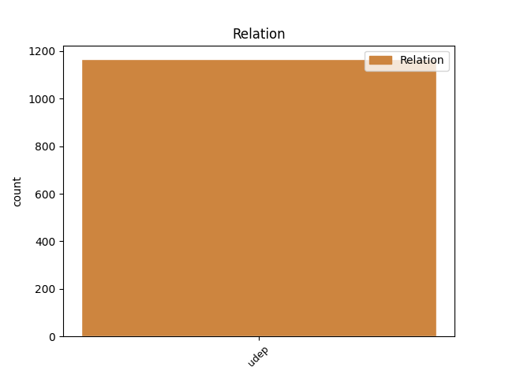
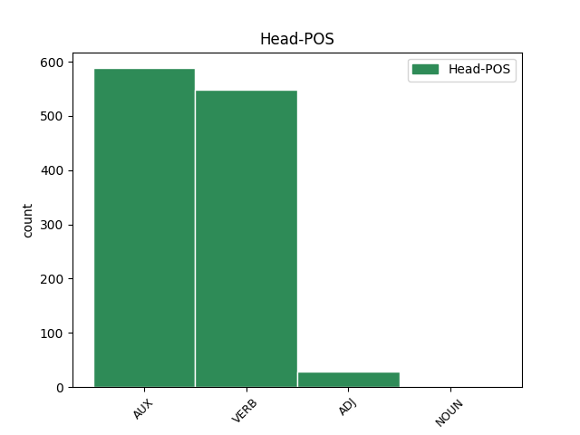
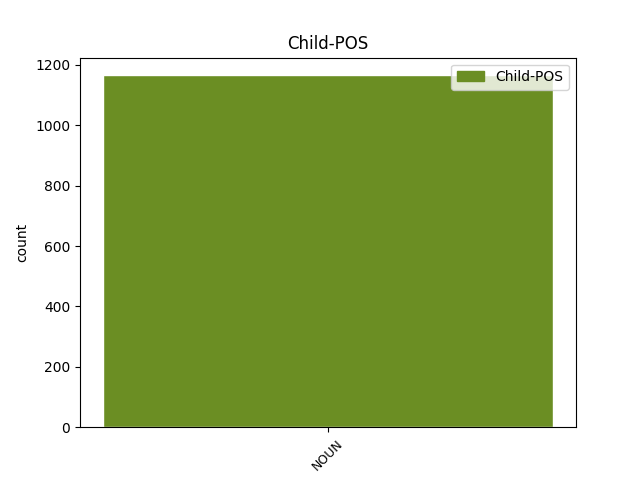

Distribution of features within this leaf



Agreement Rules sorted by frequency.
- When the dependent token is the underspecified dependency(udep) of the head token, and the head token is AUX and the dependent token is NOUN.
1 पत्रिका _ _ _ _ 0 _ _ _
2 ने _ _ _ _ 0 _ _ _
3 सूत्रों _ _ _ _ 0 _ _ _
4 का _ _ _ _ 0 _ _ _
5 हवाला _ _ _ _ 0 _ _ _
6 देते _ _ _ _ 0 _ _ _
7 हुए _ _ _ _ 0 _ _ _
8 कहा _ _ _ _ 0 _ _ _
9 कि _ _ _ _ 0 _ _ _
10 पिछले _ _ _ _ 0 _ _ _
11 वर्ष वर्ष NOUN NN Case=Acc|Gender=Masc|Number=Sing|Person=3 31 udep _ ChunkId=NP4|ChunkType=head|Tam=0|Translit=varṣa|Vib=0
12 दिसंबर _ _ _ _ 0 _ _ _
13 में _ _ _ _ 0 _ _ _
14 व्हाइट _ _ _ _ 0 _ _ _
15 हाउस _ _ _ _ 0 _ _ _
16 में _ _ _ _ 0 _ _ _
17 एक _ _ _ _ 0 _ _ _
18 बैठक _ _ _ _ 0 _ _ _
19 के _ _ _ _ 0 _ _ _
20 दौरान _ _ _ _ 0 _ _ _
21 राष्ट्रपति _ _ _ _ 0 _ _ _
22 जॉर्ज _ _ _ _ 0 _ _ _
23 बुश _ _ _ _ 0 _ _ _
24 ने _ _ _ _ 0 _ _ _
25 पाकिस्तानी _ _ _ _ 0 _ _ _
26 राष्ट्रपति _ _ _ _ 0 _ _ _
27 परवेज़ _ _ _ _ 0 _ _ _
28 मुशर्रफ _ _ _ _ 0 _ _ _
29 से _ _ _ _ 0 _ _ _
30 कहा _ _ _ _ 0 _ _ _
31 था था AUX VAUX Gender=Masc|Mood=Ind|Number=Sing|Tense=Past|VerbForm=Fin 0 _ _ _
32 कि _ _ _ _ 0 _ _ _
33 उनका _ _ _ _ 0 _ _ _
34 मानना _ _ _ _ 0 _ _ _
35 है _ _ _ _ 0 _ _ _
36 कि _ _ _ _ 0 _ _ _
37 खान _ _ _ _ 0 _ _ _
38 ने _ _ _ _ 0 _ _ _
39 अपने _ _ _ _ 0 _ _ _
40 सभी _ _ _ _ 0 _ _ _
41 घृणित _ _ _ _ 0 _ _ _
42 सौदों _ _ _ _ 0 _ _ _
43 को _ _ _ _ 0 _ _ _
44 स्वीकार _ _ _ _ 0 _ _ _
45 नहीं _ _ _ _ 0 _ _ _
46 किया _ _ _ _ 0 _ _ _
47 है _ _ _ _ 0 _ _ _
48 । _ _ _ _ 0 _ _ _
1 अपने _ _ _ _ 0 _ _ _
2 चार _ _ _ _ 0 _ _ _
3 - _ _ _ _ 0 _ _ _
4 दिवसीय _ _ _ _ 0 _ _ _
5 भारत _ _ _ _ 0 _ _ _
6 दौरे _ _ _ _ 0 _ _ _
7 के _ _ _ _ 0 _ _ _
8 दौरान _ _ _ _ 0 _ _ _
9 वे _ _ _ _ 0 _ _ _
10 भारतीय _ _ _ _ 0 _ _ _
11 नेताओं _ _ _ _ 0 _ _ _
12 से _ _ _ _ 0 _ _ _
13 सीमा _ _ _ _ 0 _ _ _
14 विवाद विवाद NOUN NN Case=Acc|Gender=Masc|Number=Sing|Person=3 21 udep _ ChunkId=NP5|ChunkType=head|Tam=0|Translit=vivāda|Vib=0
15 और _ _ _ _ 0 _ _ _
16 अन्य _ _ _ _ 0 _ _ _
17 द्विपक्षीय _ _ _ _ 0 _ _ _
18 मसलों _ _ _ _ 0 _ _ _
19 पर _ _ _ _ 0 _ _ _
20 बातचीत _ _ _ _ 0 _ _ _
21 करेंगे कर VERB VM Gender=Masc|Mood=Ind|Number=Sing|Person=3|Polite=Form|Tense=Fut|VerbForm=Fin|Voice=Act 0 _ _ _
22 । _ _ _ _ 0 _ _ _
1 पाटिल _ _ _ _ 0 _ _ _
2 के _ _ _ _ 0 _ _ _
3 साथ _ _ _ _ 0 _ _ _
4 मुलाकात _ _ _ _ 0 _ _ _
5 को _ _ _ _ 0 _ _ _
6 शिष्टाचार _ _ _ _ 0 _ _ _
7 बैठक _ _ _ _ 0 _ _ _
8 बताते _ _ _ _ 0 _ _ _
9 हुए _ _ _ _ 0 _ _ _
10 मोदी _ _ _ _ 0 _ _ _
11 ने _ _ _ _ 0 _ _ _
12 कहा _ _ _ _ 0 _ _ _
13 कि _ _ _ _ 0 _ _ _
14 उन्होंने _ _ _ _ 0 _ _ _
15 गुजरात _ _ _ _ 0 _ _ _
16 के _ _ _ _ 0 _ _ _
17 1600 _ _ _ _ 0 _ _ _
18 किमी किमी NOUN NN Case=Nom|Gender=Masc|Number=Sing|Person=3 19 udep _ ChunkId=NP7|ChunkType=head|Tam=0|Translit=kimī|Vib=0
19 लंबे लंबा ADJ JJ Case=Acc|Gender=Masc|Number=Sing 0 _ _ _
20 समुद्री _ _ _ _ 0 _ _ _
21 तट _ _ _ _ 0 _ _ _
22 की _ _ _ _ 0 _ _ _
23 सुरक्षा _ _ _ _ 0 _ _ _
24 के _ _ _ _ 0 _ _ _
25 लिए _ _ _ _ 0 _ _ _
26 400 _ _ _ _ 0 _ _ _
27 करोड़ _ _ _ _ 0 _ _ _
28 रुपये _ _ _ _ 0 _ _ _
29 के _ _ _ _ 0 _ _ _
30 तटीय _ _ _ _ 0 _ _ _
31 विकास _ _ _ _ 0 _ _ _
32 की _ _ _ _ 0 _ _ _
33 योजना _ _ _ _ 0 _ _ _
34 दी _ _ _ _ 0 _ _ _
35 है _ _ _ _ 0 _ _ _
36 । _ _ _ _ 0 _ _ _
Disagree Examples:
1 और _ _ _ _ 0 _ _ _
2 इस _ _ _ _ 0 _ _ _
3 तरह _ _ _ _ 0 _ _ _
4 से _ _ _ _ 0 _ _ _
5 यह _ _ _ _ 0 _ _ _
6 वस्तुओं वस्तु NOUN NN Case=Acc|Gender=Fem|Number=Plur|Person=3 14 udep _ ChunkId=NP3|ChunkType=head|Tam=0|Translit=vastuoṁ|Vib=0
7 और _ _ _ _ 0 _ _ _
8 परंपराओं _ _ _ _ 0 _ _ _
9 से _ _ _ _ 0 _ _ _
10 जीवंत _ _ _ _ 0 _ _ _
11 रूप _ _ _ _ 0 _ _ _
12 से _ _ _ _ 0 _ _ _
13 जुड़ा _ _ _ _ 0 _ _ _
14 हुआ हो AUX VAUX Aspect=Perf|Gender=Masc|Number=Sing|VerbForm=Part 0 _ _ _
15 है _ _ _ _ 0 _ _ _
16 । _ _ _ _ 0 _ _ _
1 कई _ _ _ _ 0 _ _ _
2 युद्ध _ _ _ _ 0 _ _ _
3 झेल _ _ _ _ 0 _ _ _
4 चुका _ _ _ _ 0 _ _ _
5 और _ _ _ _ 0 _ _ _
6 कितने _ _ _ _ 0 _ _ _
7 ही _ _ _ _ 0 _ _ _
8 राजा _ _ _ _ 0 _ _ _
9 और _ _ _ _ 0 _ _ _
10 नवाबों _ _ _ _ 0 _ _ _
11 के _ _ _ _ 0 _ _ _
12 उत्कर्ष _ _ _ _ 0 _ _ _
13 और _ _ _ _ 0 _ _ _
14 पतन _ _ _ _ 0 _ _ _
15 का _ _ _ _ 0 _ _ _
16 साक्षी _ _ _ _ 0 _ _ _
17 रहा _ _ _ _ 0 _ _ _
18 रणथम्भौर _ _ _ _ 0 _ _ _
19 किला _ _ _ _ 0 _ _ _
20 समुद्र _ _ _ _ 0 _ _ _
21 की _ _ _ _ 0 _ _ _
22 सतह _ _ _ _ 0 _ _ _
23 से _ _ _ _ 0 _ _ _
24 401 _ _ _ _ 0 _ _ _
25 मीटर मीटर NOUN NN Case=Nom|Gender=Masc|Number=Sing|Person=3 26 udep _ ChunkId=NP10|ChunkType=head|Tam=0|Translit=mīṭara|Vib=0
26 ऊँची ऊँचा ADJ JJ Case=Acc|Gender=Fem|Number=Sing 0 _ _ _
27 पहाड़ी _ _ _ _ 0 _ _ _
28 पर _ _ _ _ 0 _ _ _
29 बना _ _ _ _ 0 _ _ _
30 है _ _ _ _ 0 _ _ _
31 । _ _ _ _ 0 _ _ _
1 राणा _ _ _ _ 0 _ _ _
2 सांगा _ _ _ _ 0 _ _ _
3 को _ _ _ _ 0 _ _ _
4 हराने _ _ _ _ 0 _ _ _
5 के _ _ _ _ 0 _ _ _
6 लिए _ _ _ _ 0 _ _ _
7 मुगलों _ _ _ _ 0 _ _ _
8 ने _ _ _ _ 0 _ _ _
9 यहाँ _ _ _ _ 0 _ _ _
10 कई _ _ _ _ 0 _ _ _
11 बार बार NOUN NN Case=Nom|Gender=Fem|Number=Plur|Person=3 13 udep _ ChunkId=NP4|ChunkType=head|Tam=0|Translit=bāra|Vib=0
12 आक्रमण _ _ _ _ 0 _ _ _
13 किये कर VERB VM Aspect=Perf|Gender=Masc|Number=Plur|VerbForm=Part|Voice=Act 0 _ _ _
14 जिनमें _ _ _ _ 0 _ _ _
15 कई _ _ _ _ 0 _ _ _
16 बार _ _ _ _ 0 _ _ _
17 राणा _ _ _ _ 0 _ _ _
18 सांगा _ _ _ _ 0 _ _ _
19 घायल _ _ _ _ 0 _ _ _
20 हुए _ _ _ _ 0 _ _ _
21 । _ _ _ _ 0 _ _ _
1 राणा _ _ _ _ 0 _ _ _
2 सांगा _ _ _ _ 0 _ _ _
3 को _ _ _ _ 0 _ _ _
4 हराने _ _ _ _ 0 _ _ _
5 के _ _ _ _ 0 _ _ _
6 लिए _ _ _ _ 0 _ _ _
7 मुगलों _ _ _ _ 0 _ _ _
8 ने _ _ _ _ 0 _ _ _
9 यहाँ _ _ _ _ 0 _ _ _
10 कई _ _ _ _ 0 _ _ _
11 बार _ _ _ _ 0 _ _ _
12 आक्रमण _ _ _ _ 0 _ _ _
13 किये _ _ _ _ 0 _ _ _
14 जिनमें _ _ _ _ 0 _ _ _
15 कई _ _ _ _ 0 _ _ _
16 बार बार NOUN NN Case=Nom|Gender=Fem|Number=Plur|Person=3 20 udep _ ChunkId=NP7|ChunkType=head|Tam=0|Translit=bāra|Vib=0
17 राणा _ _ _ _ 0 _ _ _
18 सांगा _ _ _ _ 0 _ _ _
19 घायल _ _ _ _ 0 _ _ _
20 हुए हो VERB VM Aspect=Perf|Gender=Masc|Number=Sing|Person=3|Polite=Form|VerbForm=Part|Voice=Act 0 _ _ _
21 । _ _ _ _ 0 _ _ _
1 यहाँ _ _ _ _ 0 _ _ _
2 की _ _ _ _ 0 _ _ _
3 गलियाँ _ _ _ _ 0 _ _ _
4 , _ _ _ _ 0 _ _ _
5 नुक्कड़ _ _ _ _ 0 _ _ _
6 हर _ _ _ _ 0 _ _ _
7 जगह जगह NOUN NN Case=Nom|Gender=Fem|Number=Sing|Person=3 12 udep _ ChunkId=NP4|ChunkType=head|Tam=0|Translit=jagaha|Vib=0
8 अनूठी _ _ _ _ 0 _ _ _
9 खूबसूरती _ _ _ _ 0 _ _ _
10 में _ _ _ _ 0 _ _ _
11 डूबे _ _ _ _ 0 _ _ _
12 हुए हो AUX VAUX Aspect=Perf|Gender=Masc|Number=Plur|VerbForm=Part 0 _ _ _
13 हैं _ _ _ _ 0 _ _ _
14 । _ _ _ _ 0 _ _ _